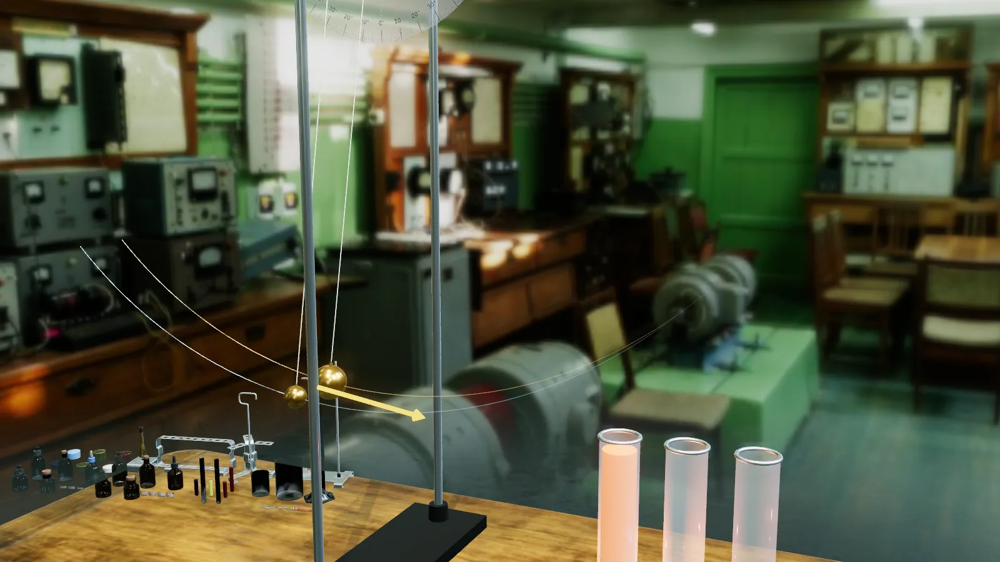
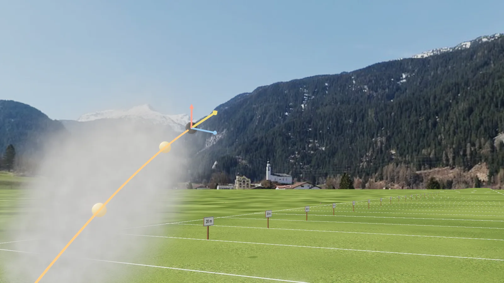
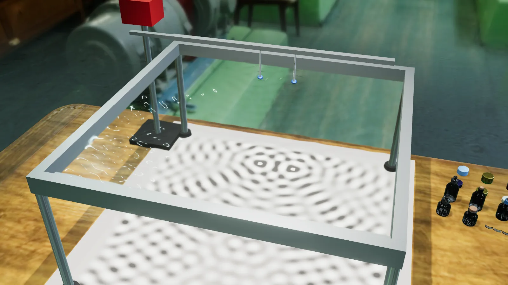
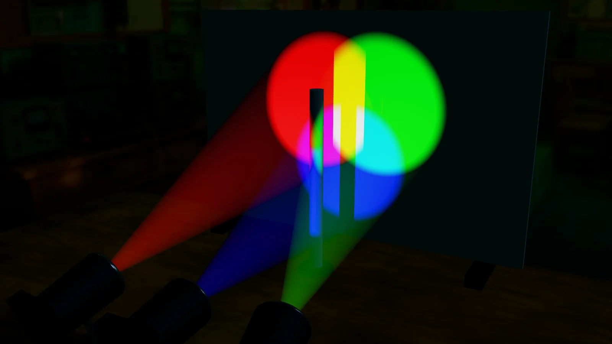
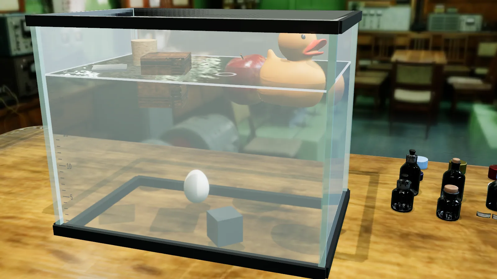
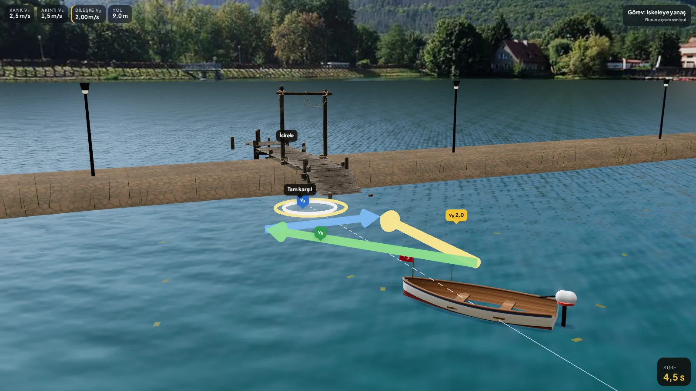
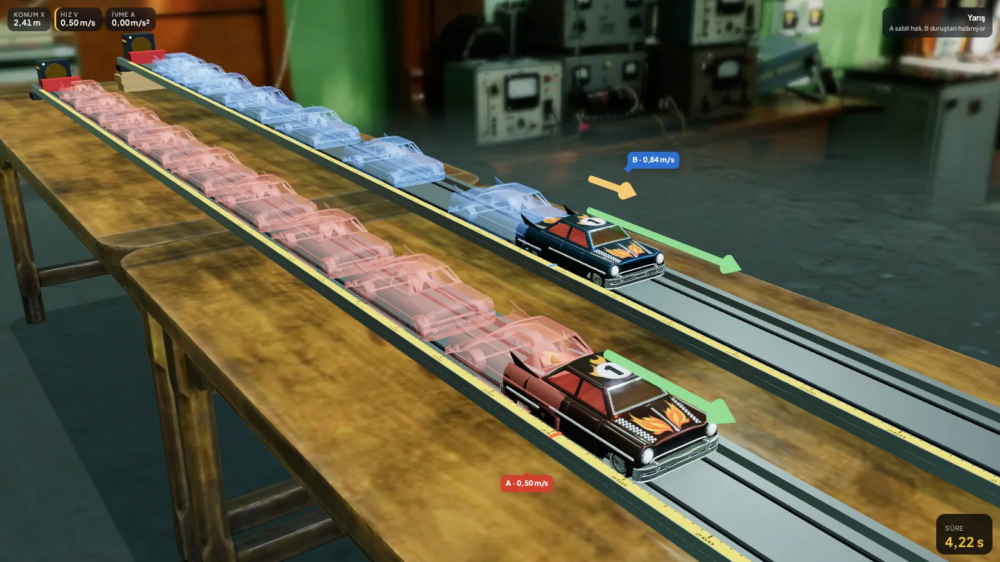
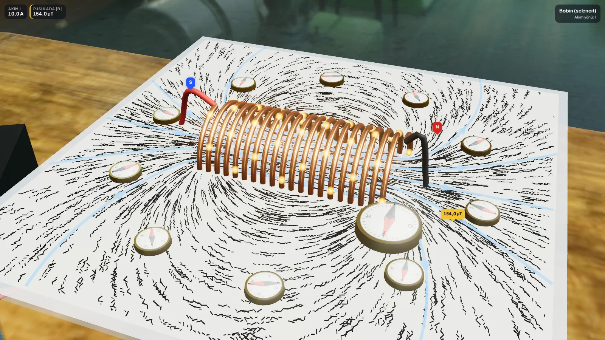

YENİ / ŞAHİN GARAJI
YENİ / ŞAHİN GARAJIŞahin’le ivme yarışı
54 BFY 54 hazır. Kütleyi ve kuvveti seç, kazananı tahmin et. Garajda arabayı 360° incele.
BFY LAB · AKILLI TAHTA
Bir değişkeni değiştirin.
Bir tahmini sınayın. Birlikte anlayın.

BUGÜN SINIFTAENERJİ VE SARKAÇ
Dokun. Değiştir.Büyük kontrollerle deneyi yönet.
Çiz. Anlat.Sahnenin üzerine kalemle işaret koy.
Sor. Birlikte keşfet.Her deneyin üç adımlık ders akışını aç.
DENEY KÜTÜPHANESİ
Bir konu seç. Deney tahta modunda açılır.
11 başlık · 19 deney
YENİ / ŞAHİN GARAJI54 BFY 54 hazır. Kütleyi ve kuvveti seç, kazananı tahmin et. Garajda arabayı 360° incele.

01 / HAREKETAçıyı değiştir. Aynı atışın Dünya, Ay ve Mars’ta izlediği yolu karşılaştır.
Sarkacı bırak. Enerjinin biçim değiştirmesini ve periyodu birlikte keşfet.
 03 / ELEKTRİK
03 / ELEKTRİKTemas anına git. Momentum ve enerjinin iki araç arasındaki değişimini izle.

05 / DALGALARDalgaları buluştur. Girişimi, kırınımı ve duran dalgayı görünür kıl.

06 / OPTİKIşığın yolunu takip et. Renkleri, odak noktasını ve görüntü oluşumunu incele.

07 / AKIŞKANLARCismi suya bırak. Yoğunluk, derinlik ve batan hacmin etkisini ayır.

08 / VEKTÖRLERNehri geç ya da okları uç uca ekle. Bileşkeyi tahmin et, deneyle kontrol et.

09 / HAREKETAracı hareket ettir. Konum, hız ve ivme grafiklerini aynı anda oku.

10 / MANYETİZMAAkımı değiştir, pusulayı gezdir. Tel, halka ve bobinin alanını karşılaştır.
“Ders akışı” ile tahminleri alın, deneyin ayarlarını değiştirin ve açıklamayı birlikte açın. “Deneyi yönet” ile sahneye dokunun; “Kalem” ile gördüklerinizi işaretleyin. Tahta modundan çıktığınızda deney kaldığı yerden devam eder.